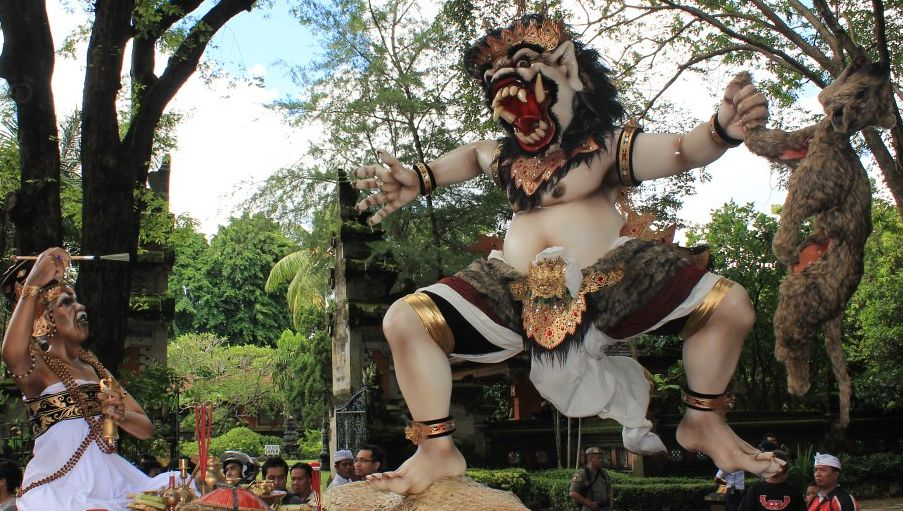

Ogoh-ogoh merupakan karya patung raksasa khas Bali yang biasanya berbentuk makhluk menyeramkan sebagai simbol sifat buruk, gangguan supranatural, atau energi negatif yang diyakini mengganggu keharmonisan hidup. Bentuknya dapat berupa raksasa, bhuta kala, makhluk mitologi, hingga figur-figur kreatif hasil imajinasi para seniman lokal.
Patung ini dibuat dari rangka bambu dan kayu, kemudian dibentuk menggunakan kertas, kain, dan styrofoam. Proses pembuatannya melibatkan keterampilan artistik tinggi, mulai dari teknik pahatan, pengecatan detail, hingga pemasangan ornamen. Tidak hanya sebagai simbol ritual, ogoh-ogoh juga menjadi media ekspresi seni dan kreativitas masyarakat Bali. Banyak desa adat membuat ogoh-ogoh dengan konsep tematik, pesan moral, atau inovasi visual yang menjadikannya semakin menarik.
Ogoh-ogoh diarak pada malam Pengerupukan, sehari sebelum Hari Nyepi. Pada prosesi ini, ogoh-ogoh digerakkan dan diputar di berbagai persimpangan jalan sebagai simbol pengusiran roh jahat dari penjuru desa. Suasana arak-arakan biasanya meriah sekaligus sakral, diiringi gamelan, obor, dan sorak semangat warga. Beberapa ogoh-ogoh modern juga dilengkapi mekanisme gerak sederhana sehingga mulut, tangan, atau kepala dapat bergerak saat diarak.
Sumber: indonesiavirtualtour.com